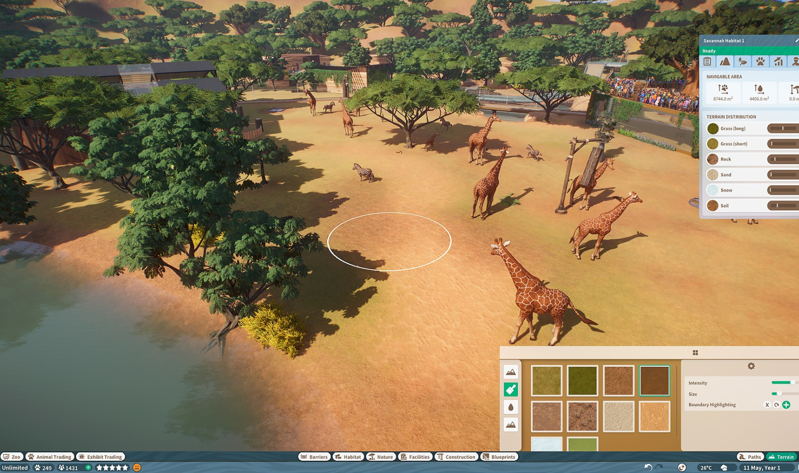

My favorite
 Dirt Rally 2.0
Dirt Rally 2.0
 Assetto Corsa Competizione
Assetto Corsa Competizione
 Gran Turismo Sport
Gran Turismo Sport
2019 is the year that I properly got into sim racing. After visiting a friend and trying his rig I was convinced I wanted to spend some time exploring sim racing. It is a ton of fun, and combined with an interest in F1 and rally, a lot of my leisure time in 2019 had just one theme: racing.
Looking back at the blog posts on my blog about sim racing (1, 2, 3, 4) I was clearly always going a bit deeper into sim racing. The past few weeks have been so busy with work that I haven't had much time to race. I think I reached a point where I believe I need to put hundreds of hours into it to improve just a little bit. For me, it's always been about the fun. Of course, being competitive is also fun. But I can't justify it to myself to spend hours and hours behind the sim rig to shave off a few seconds off a track time. So I think in 2020 I am just going to race less, but focus on the parts that are fun to me: discovering new tracks, new cars, maybe some racing with friends.
Honorable Mentions
Observation: I have a penchant for deep simulation games, but these can take hundreds of hours, so I kind of only got to play them a little bit. Still; I find these games are still nice, even if it's only for a few hours.

Planet Zoo
Frostpunk
 Anno 1800
Anno 1800